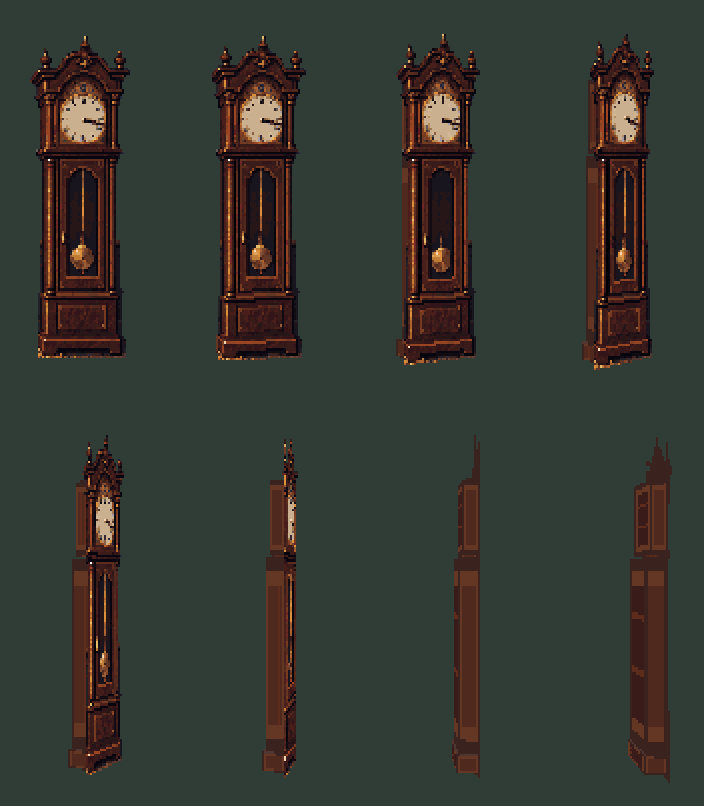

Perspective study using the original clock face, a fixed right hinge and cabinet depth. Holmes and the room keep their reference scale. New side surfaces are still rough drawing guides.
This is a local camera construction, not a recovered camera for the whole room. The desk correction, Holmes’s walk redraw and his age adjustment remain separate pending work.

Reproduce this study · Blender source · Pixelorama master · Animation GIF · Previous motion study